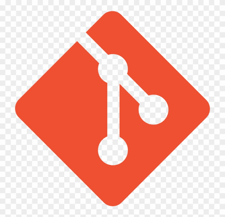
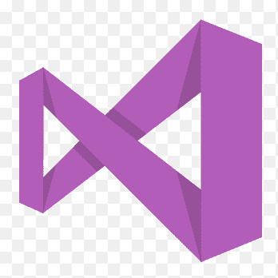
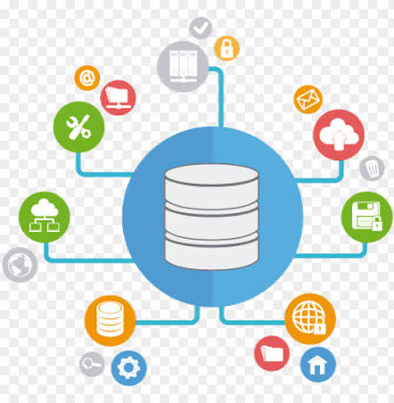
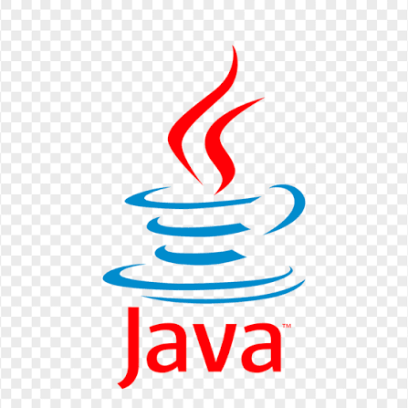
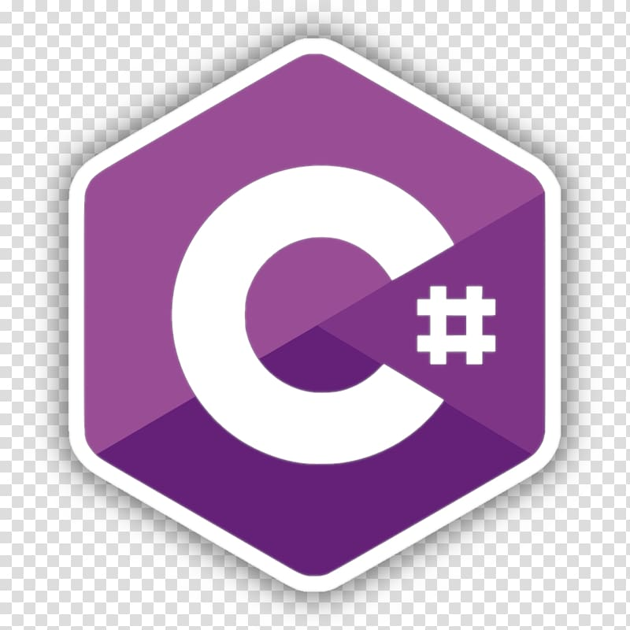
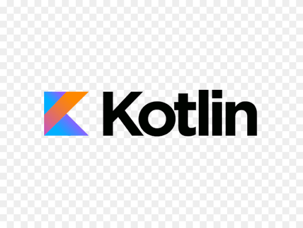
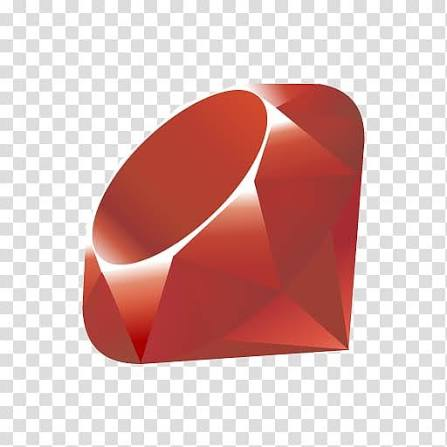
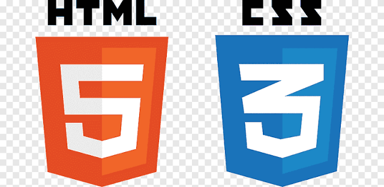
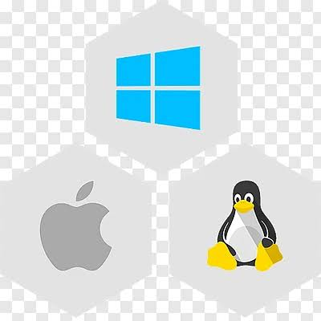

Software Engineer
Specialisaties
Software Engineer/ Developer
Schrijft en debugt code
Front-End Developer
Interfaceontwerp en client-side, UX/UI (HTML, CSS, JavaScript)
Back-End Developer
Server-side code, databases en applicatie interfaces
Full-Stack Developer
Combineert front-end en back-end samen
Mobile Developer
Apps voor mobiel (Swift/iOS, Kotlin-Java/Android)
DevOps Engineer
Deployment, delivery en integratie
- Neemt de code van integratie voor production
- Deployt code updates naar test- en stagingomgevingen
- Handmatig goedkeuren van pushen naar live productie
- Mergen van code
- Bouwt de applicatie na elke commit en test voor bugs
QA Engineer
Test of software aan de gewenste kwaliteit voldoet
Data Engineer
Workflow van grootschalige dataverwerkings- en databasesystemen
Wat maak je dan?
Wat maak je als software developer:
- Mobiele apps
- Websites en webshops
- Bedrijfs software:
- adminis-
tratie - voorraad
- klant-
gegevens
- adminis-
Wat doe je?
- Ontwerpen
- Bouwen
- Testen
- Onderhouden
6 Most Wanted Skills
1. Data Structuren en Algoritmen
Het is belangrijk om te weten hoe je data gestructureerd houdt en gebruiken kan.

3. Source Control
Managen van code en version control en tools zoals Git, Mercurial en SVN. Denk dan aan Backups, Geschiedenis, Terugzetten van code en Collaboration met mensen. Met bijvoorbeeld version control kan je je code makkelijk terugzetten.

4. Text Editors en IDEs
Essentieel als het gaat om developen. Het is belangrijk dat je een productieve ontwikkelaar wordt. Elke programmeur zou moeten weten hoe ze code in een IDE schrijven, compilen, runnen en belangrijk: debuggen.


5. Databases
Kunnen werken met databases is essentieel. Zonder database is de applicatie of software niet compleet. Het is daarom ook belangrijk dat je weet hoe ze werken. Denk aan records, fields en query's.

2. Programmeertalen
Python

Java

Java-
Script

C#

C / C++
Kotlin

Ruby

PHP
Swift
Go
Type-
Script
HTML & CSS

6. Operating System (OS)
Het is belangrijk dat je weet hoe je OS werkt. Dan is het makkelijker om issues op te lossen.
